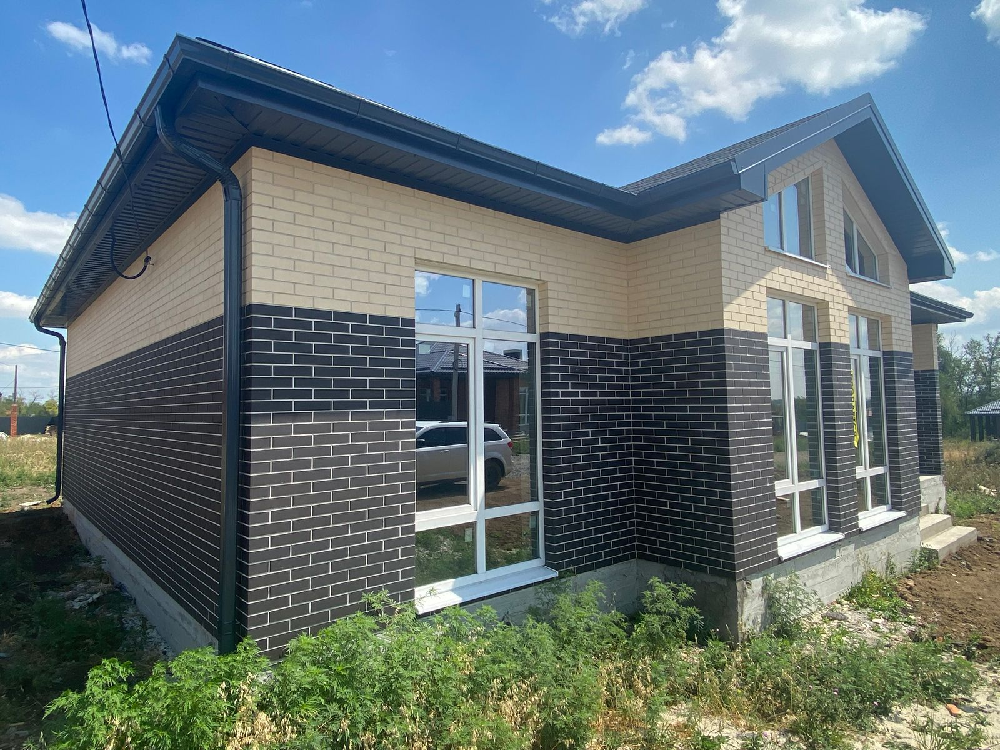
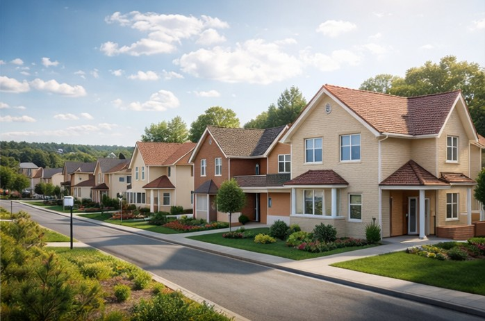
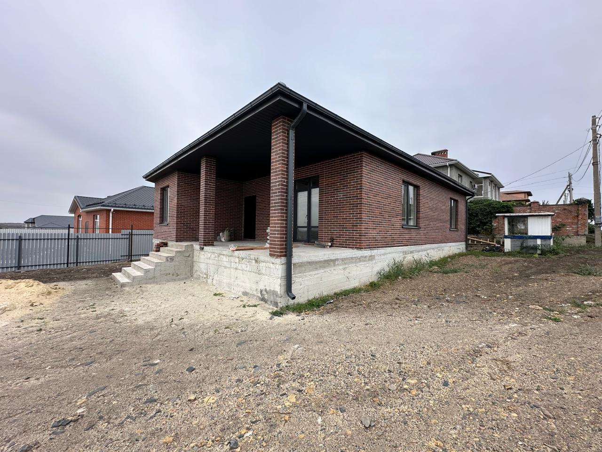

Городской частный сектор
Старые и добротные дома на улицах Гагарина, Будённого, Садовой, Шевченко, Толпинского.
Подбор домов для жизни, переезда и инвестиций.

Подберём участок, проект и вариант финансирования. Кредитный брокер подаст заявки в разные банки и сравнит подходящие предложения для вашей семьи.
* Для нового строительства. Сумма зависит от состава семьи, программы и банка; сверх льготного лимита ставка может отличаться. Брокер уточнит требования к подрядчику и эскроу, взнос, полную стоимость кредита и срок. Решение принимает банк. Условия проверяем на дату обращения. О программе.
Показываем объекты с известной географией. Уточним наличие и условия просмотра при обращении.
Дома в посёлке Российский: посмотреть отдельную подборку
Откройте страницу объекта, чтобы посмотреть характеристики и связаться с нами.
При покупке дома в Аксае безопаснее начинать с проверки дома и земли: права и обременения по ЕГРН, назначение земли, границы участка, подъезд, коммуникации и фактическое состояние объекта.
Вторичные дома в Аксае — это не один тип объекта, а широкий сегмент: старый индивидуальный фонд, кирпичные дома 1980-х–2000-х, современные дома 120–200 м², части дома, таунхаусы и дуплексы. Поэтому выбор обычно строится не только вокруг площади, но и вокруг сценария жизни, участка и состояния коммуникаций.
По открытой экспозиции объём предложений по домам в Аксае заметно выше, чем по квартирам, а разброс форматов и качества объектов шире. Главная практическая задача покупателя — читать рынок по улицам и проверять не только сам дом, но и юридическую и фактическую конфигурацию земли.

Старые и добротные дома на улицах Гагарина, Будённого, Садовой, Шевченко, Толпинского.
Дома 120–200 м² на участках 3–9 соток для семейного проживания и постоянной жизни в городе.
Более доступный входной формат, который требует особенно внимательной проверки документов и состояния.
Компактный гибрид между квартирой и домом, который встречается в отдельных локациях, включая Платова.
Городской частный сектор, дома в самом Аксае, рядом с повседневной инфраструктурой.
Подходит для: семьи, тех, кто хочет дом в городе, а не за городом.
На что обратить внимание: год дома, коммуникации, плотность застройки, подъезд и парковка.
Спокойный старый частный каркас города, смешанный фонд, дома разных годов и состояний.
Подходит для: покупателей, которым важна тишина, участок и городская прописка.
На что обратить внимание: документы на дом и землю, пристройки, фактические границы участка.
Более смешанный и свежий формат: дома, таунхаусы, участки и близость к новым жилым зонам.
Подходит для: тех, кто хочет не самый старый фонд и готов к более автомобильному сценарию.
На что обратить внимание: транспортную логику, коммуникации, статус участка и качество подъезда.


Если нужен именно дом в городе, стоит начинать с улиц Гагарина, Будённого, Садовой, Шевченко и Толпинского. Если хочется более свежий формат и меньше возрастных рисков, стоит смотреть Речников, Платова и новые точки индивидуальной застройки. В любом случае главный объект проверки — не только дом, но и земля под ним.
Гагарина, Будённого, Садовая, Шевченко.
Центральные и околoцентральные улицы Аксая.
Небольшие дома, части дома, старый фонд.
Речников, Платова, таунхаусы, новые дома.
Смотреть также раздел участков и ближайшие посёлки.
Плюсы: городская инфраструктура, готовые коммуникации, понятная среда.
Проверить: возраст дома, инженерию, документы, подъезд.
Плюсы: современная планировка, меньше физический износ, актуальный формат.
Проверить: качество строительства, коммуникации, статус земли.
Плюсы: ниже входной бюджет, компактнее обслуживание.
Проверить: доли, порядок пользования, отдельные коммуникации, юридическую схему.
Чаще всего начинают с Гагарина, Будённого, Садовой, Шевченко и Толпинского, а затем сравнивают с более свежими локациями.
Обычно смотрят Будённого, Гагарина, Садовую и Шевченко, где проще совместить домовой формат и городскую повседневность.
В городском доме участок и его статус часто не менее важны, чем метраж: именно они определяют будущие сценарии использования.
Права на дом и землю, границы участка, обременения, статус коммуникаций и соответствие фактической конфигурации документам.
Да, если нужен компромисс между квартирой и домом, но важно тщательно проверить юридическую схему и режим пользования.
Когда критичны бюджет и размер участка, а ежедневная автомобильная логистика приемлема для вашей семьи.
Если хотите сравнить дом с квартирой в Аксае.
Перейти в раздел квартирЕсли рассматриваете строительство собственного дома.
Перейти в раздел участковЕсли хотите сравнить частный дом с новым жилым фондом.
Перейти в раздел новостроекПошаговые материалы помогут сравнить дом в городе, дом рядом с Ростовом и документы перед сделкой.
Что проверить перед покупкой дома Отдельно проверить земельный участок Где купить дом рядом с Ростовом